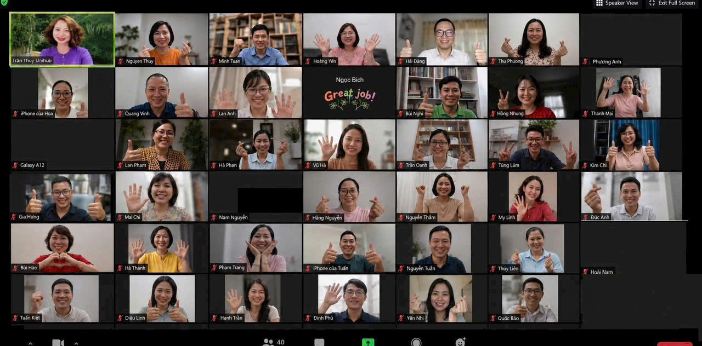
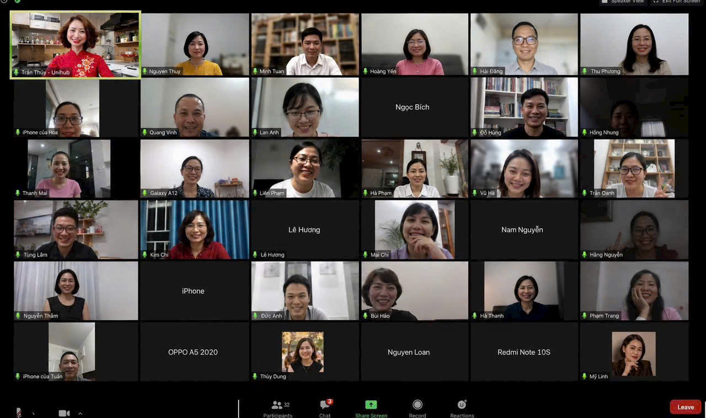

Bạn à — Lớp học Zoom trực tiếp · 2 buổi · Miễn phí
Tôi là [Tên Diễn Giả]. 5 năm trước tôi cũng nhắn gần hết danh bạ bạn bè. Bị từ chối gần hết. Có lúc nghi ngờ chính mình. Giờ tôi không mời ai nữa — người ta tự nhắn tôi trước. Tôi và đội ngũ diễn giả được tuyển chọn sẽ chỉ lại đúng cách đó cho bạn, miễn phí, qua 2 buổi Zoom trực tiếp.
Giữ chỗ — Miễn phíKhông cần kinh nghiệm. Không cần vốn. Tổng cộng khoảng 4-6 tiếng cho cả 2 buổi — chỉ cần máy tính/điện thoại có Zoom.
Mời hết người trong danh bạ. Nhắn từng người một, chọn từng câu chữ để không bị nghĩ là làm phiền. Vẫn bị từ chối. Có người còn lơ luôn tin nhắn.
Thử đăng vào mấy group đông người. Bài chìm nghỉm giữa hàng trăm bài giống hệt nhau. Không ai hỏi gì.
Tệ hơn cả bị từ chối, là cảm giác lòng tự trọng bị tổn thương — mình chỉ đang muốn tốt cho người ta, mà lòng tốt đó cứ liên tục bị nghi ngờ.
Rồi bắt đầu nghĩ: hay là mình không hợp làm việc này? Tại sao mình cứ phải chạy theo, chèo kéo người khác vậy?
Không phải vậy. Không phải vì bạn tệ. Không phải vì bạn thiếu cố gắng. Vấn đề là cách tiếp cận.
Minh họa
Cách cũ — mình đi mời
Đã xem · 14:32 · không trả lời
Cách mới — họ tự nhắn mình
Họ chủ động nhắn trước — không cần mình mở lời
Bạn sẽ tham gia cùng một nhóm khá đông người khác qua Zoom — cùng nghe, cùng hỏi, cùng thấy mình không phải người duy nhất từng bị từ chối vì cách làm cũ.


Ảnh chụp thật từ các buổi chia sẻ trước — không phải ảnh dựng
Mời người quen là mình đoán ai đó có thể cần rồi chủ động tiếp cận — tỷ lệ trúng thấp, và người bị mời dễ cảm thấy bị làm phiền. Còn cách tôi đang dùng: chỉ xuất hiện đúng chỗ những người đang thực sự tìm, để họ tự nhắn mình trước.
Nghe đơn giản, nhưng cách làm cụ thể mới là phần quan trọng. Bạn sẽ tự hỏi: vậy làm sao để đúng người tự tìm đến mình? Đó là điều tôi và đội ngũ diễn giả được tuyển chọn sẽ đi từng bước cùng bạn trong 2 buổi Zoom tới.
Bạn nhận quy trình để khách tự tìm đến — không cần đi tìm khách
Biết được
Nhận được
Làm được
Đây không phải lần đầu cách này được áp dụng — đã có hơn 300 người dùng đúng cách tiếp cận này trước đó.
Hành trình 300+ người đó đã đi qua
😓
Không biết bắt đầu từ đâu, sợ bị từ chối
🔍
Biết đúng người, đúng chỗ để xuất hiện
💬
Có người chủ động nhắn hỏi
🎯
Có khách/đơn hàng đầu tiên
Tốc độ đi qua từng bước khác nhau tùy người — đây là quy trình khóa học trực tiếp hướng dẫn, không phải cam kết thời gian cho tất cả.
[Tên Diễn Giả]
[Chức danh / số năm kinh nghiệm / thành tích cụ thể]
Hơn 10 năm trước, tôi được dạy đúng một cách: tìm cho được thật nhiều data khách hàng, và phải dám mời — càng nhiều càng tốt. Tôi làm đúng như vậy. Ngày này qua ngày khác, tôi sưu tầm lời từ chối nhiều hơn sưu tầm khách hàng.
Có những ngày tôi tự hỏi mình đang cố vì cái gì, khi mở điện thoại lên chỉ thấy toàn tin nhắn "không cần đâu", "để suy nghĩ đã" — hoặc tệ hơn, im lặng.
Rồi tôi nhận ra một điều làm thay đổi mọi thứ: có rất nhiều người thực sự cần đến những gì tôi có — chỉ là tôi không biết họ đang ở đâu, và họ cũng không biết tôi tồn tại. Vấn đề chưa bao giờ là thiếu người cần. Vấn đề là tôi đang tìm sai chỗ, sai cách.
Tôi đổi góc nhìn. Đổi cách làm. Không mời ai nữa — chỉ cần xuất hiện đúng chỗ, để đúng người tự tìm đến tôi. Không cần thêm bất cứ lời từ chối nào nữa.
Và điều tôi tin chắc: cách này không phải năng khiếu riêng của tôi. Ai cũng làm được — vì tôi cũng từng là người sưu tầm lời từ chối nhiều hơn ai hết.
Câu chuyện của từng học viên khác sẽ cập nhật dần ở đây — không dùng thông tin dàn dựng.
Bạn nhận quy trình để khách tự tìm đến — không cần đi tìm khách
BUỔI 1 · 120-180 phút
Vì sao bạn bị từ chối mặc dù bạn không hề tệ
Bạn sẽ hiểu chính xác lý do — và ngừng tự trách bản thân.
Bí mật nhận ra "người đang thực sự cần bạn" đang ở đâu
Làm sao để biết người phù hợp đang ở đâu? Làm thế nào để họ nhìn thấy và chủ động liên hệ với bạn?
BUỔI 2 · 120-180 phút
Quy trình hút khách hàng hàng loạt mà không cần gặp mặt từng người
Bạn sẽ có quy trình để nhiều người tự tìm đến hỏi mua, không cần thuyết phục từng người một.
Bí mật vận hành của toàn bộ hệ thống này trong thực tế
Bạn sẽ thấy cách nó chạy thật, từng bước một, để tự tin áp dụng ngay.
Quy trình đào tạo cho từng mô hình kinh doanh cụ thể
Bạn sẽ biết cách điều chỉnh quy trình này cho đúng mô hình bạn đang làm.
Hơn 300 người trước bạn đã đi qua đúng hành trình này — từ chỗ không biết bắt đầu từ đâu, đến lúc có người chủ động nhắn hỏi — nên đây không phải một ý tưởng chưa kiểm chứng. Nhưng thật lòng, tôi sẽ không hứa bạn đi nhanh hay chậm bằng ai. Kết quả phụ thuộc vào việc bạn có áp dụng hay không, tôi không thể làm thay phần đó.
Điều tôi chắc chắn: đây là cách tiếp cận đúng logic. Nhắm đúng người đang có nhu cầu, thay vì đoán mò trong vòng quen biết. Tỷ lệ họ quan tâm sẽ cao hơn hẳn.
Miễn phí. Không ràng buộc. Rủi ro duy nhất của bạn là 2 buổi tối bỏ ra để tham dự. Không hợp thì dừng, không mất gì cả.
Bạn nhận quy trình để khách tự tìm đến — không cần đi tìm khách
Để lại thông tin, tôi nhắn Zalo báo lịch và gửi link Zoom trước giờ học.
✅ Đã gửi! Tôi sẽ nhắn Zalo báo lịch trong ít phút.
Không mất phí. Không cần kinh nghiệm. Dừng bất cứ lúc nào.
Thông tin chỉ dùng để gửi link Zoom và nhắc lịch học — không chia sẻ cho bên thứ ba ngoài mục đích này.
Hoặc nhắn Zalo trực tiếp nếu muốn trao đổi ngay.